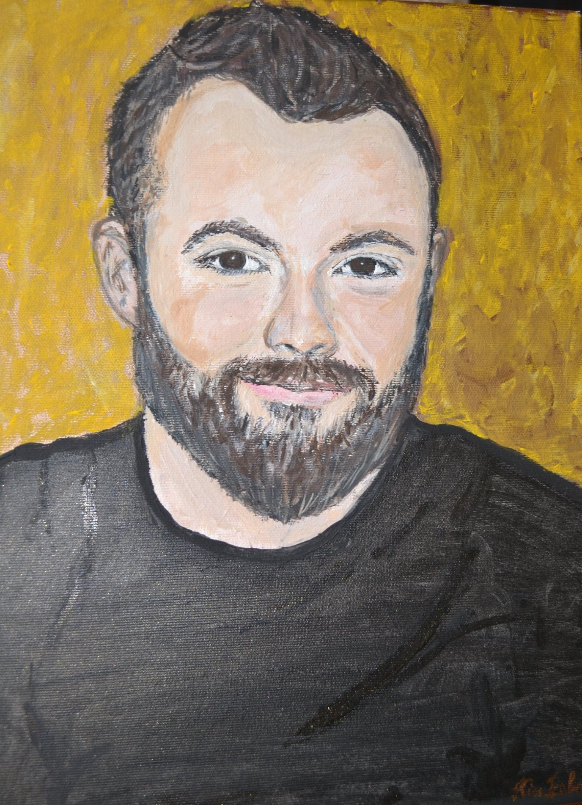

I work where quality systems meet technology: keeping documentation audit-ready, data trustworthy, and repetitive work automated.
Senior QA professional with 5+ years in life sciences, working in an ISO 9001-certified laboratory of a biotech contract research organization. I own the site's controlled documentation system, lead internal audits and support client audits, and drive root cause analysis and CAPA. Data integrity (ALCOA++) is built into how records are created, reviewed and archived.
Alongside quality systems, I bring a software quality skill set. I write and execute UAT, review requirements and assess the compliance of internal business applications, and I use Python and AI-assisted automation to take repetitive work out of quality processes. A postgraduate degree in computer programming (with distinction) and the ISTQB CTFL certification give this work a solid technical foundation.
Currently deepening my knowledge of risk-based computerized system validation (GAMP 5, CSA): URS, risk assessment and traceability.
Charles River Laboratories Hungary | Nov 2026 - present
Official title: Senior Scientist, Quality Assurance
Charles River Laboratories Hungary | Apr 2021 - Oct 2026
Telekom HU | 2019 - 2021
During my university years, I worked part-time at a leading telecommunications company, supporting internet, TV, and phone services. In this remote role, I assisted customers via phone, email, and chat with a wide range of inquiries—including technical troubleshooting, billing issues, service complaints, and product information. I was also responsible for placing orders, booking technician appointments, and maintaining customer follow-up. This experience gave me a strong understanding of telecom systems and customer-facing processes, helping me develop both technical problem-solving and business communication skills.
John von Neumann University | 2024 - 2026
Graduated with distinction
University of Szeged | 2019 - 2021
University of Szeged | 2015 - 2019
SOP and protocol lifecycle, version control, e-archiving and change communication, so documentation stays current, traceable and audit-ready.
Planning and leading internal audits against ISO 9001, supporting client audits, and turning findings into root-cause-driven CAPA plans.
Applying ALCOA++ principles so records stay attributable, complete and reliable across their lifecycle.
Clarifying requirements, writing UAT from real user workflows, and reviewing business applications for compliance before go-live.
Python- and AI-assisted automation that removes repetitive manual steps from quality processes.
UI and API automation with Playwright, Selenium, Postman/Newman and pytest, running in GitHub Actions CI pipelines.
Effort follows risk. I identify where a failure would have the biggest impact on quality, data or the business, and focus review, testing and controls there first.
Requirements, tests, results and decisions should link to each other. When an auditor asks "why?", the answer is already documented.
I treat ALCOA++ as a design requirement, not a final check. Records should be attributable, legible, contemporaneous, original and accurate, and complete, consistent and available when needed.
I fix causes, not symptoms. Deviations and audit findings get a structured root cause analysis, and each CAPA is judged by whether it actually prevents recurrence.
Ambiguity is cheapest to fix at the requirements stage. I get involved early and ask the hard questions before go-live, not after.
If a quality task is frequent, manual and rule-based, it is a candidate for automation. I use Python and AI-assisted tools to free time for work that needs human judgment.
Automated testing for regulated software. The point it proves: automated tests can produce real computerized system validation (CSV) evidence.
A complete manual QA documentation package for a web application — covering functional behavior, negative scenarios, and security-related issues such as XSS and SQL injection testing.
End-to-end UI test suite targeting Sauce Demo. Built with Python, POM architecture, and GitHub Actions CI/CD integration.
REST API test collection targeting ReqRes.in, built with Postman and Newman. Includes automated runs, environment variables, and HTML reporting.
Thesis project: automated API testing framework targeting The Movie Database API. Test cases covering functional, negative, boundary value, and non-functional scenarios with a custom HTML report dashboard.
This website — a personal QA portfolio customized from a template with HTML, CSS, JavaScript and hosted on GitHub Pages. Includes automated UI tests written with Playwright to validate the live site.
UI automation project built with Playwright and TypeScript. Targeting a real-world web application with POM architecture, data-driven tests, and CI/CD pipeline integration.
A dark fantasy browser platformer built with AI assistance and released like a product. Risk-based test strategy, 1,000+ automated tests across unit, integration and E2E layers, manual playtesting, and CI quality gates before every release.
A responsive static website for a pedicure business in Baja, Hungary. Features smooth-scrolling sticky navigation, an image gallery with modal view, and hover animations. Deployed on GitHub Pages with a custom domain and covered by a manual test plan.
© Nándor Csóka's website. All Rights Reserved. Designed by HTML Codex